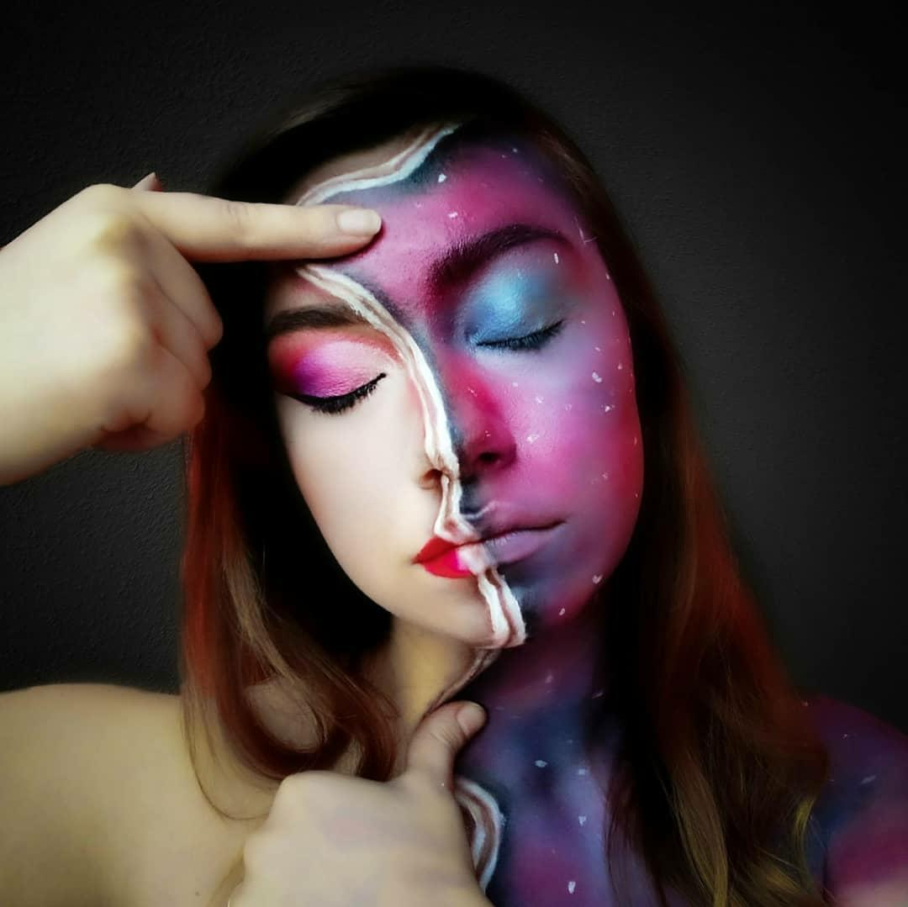

Trovare citazioni sul make-up che non lo definiscano semplicemente un modo banale o inutile di coprire difetti è stato complicato, anzi non ne ho trovate, il make-up, cosi come il body painting, è una forma d'arte come le altre e ciò che mi ha fatto innamorare di essa, è averla considerata come una possibilità di rappresentazione di se stessi. Potersi truccare come e quando si vuole è come poter rendere visibile a proprio piacimento una parte di se stessi.